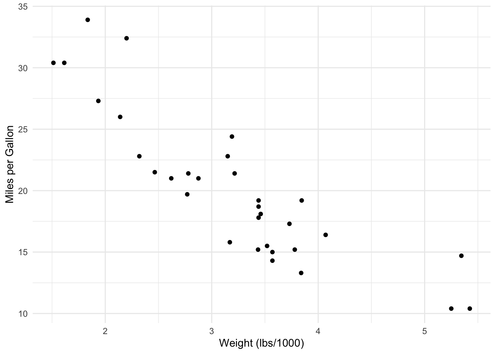
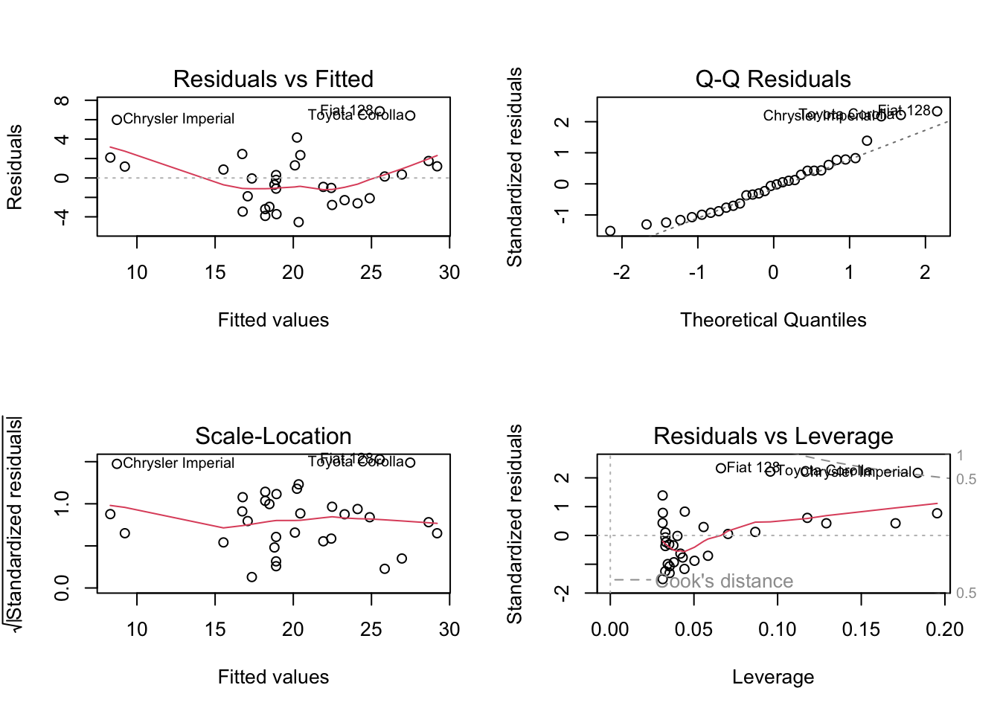
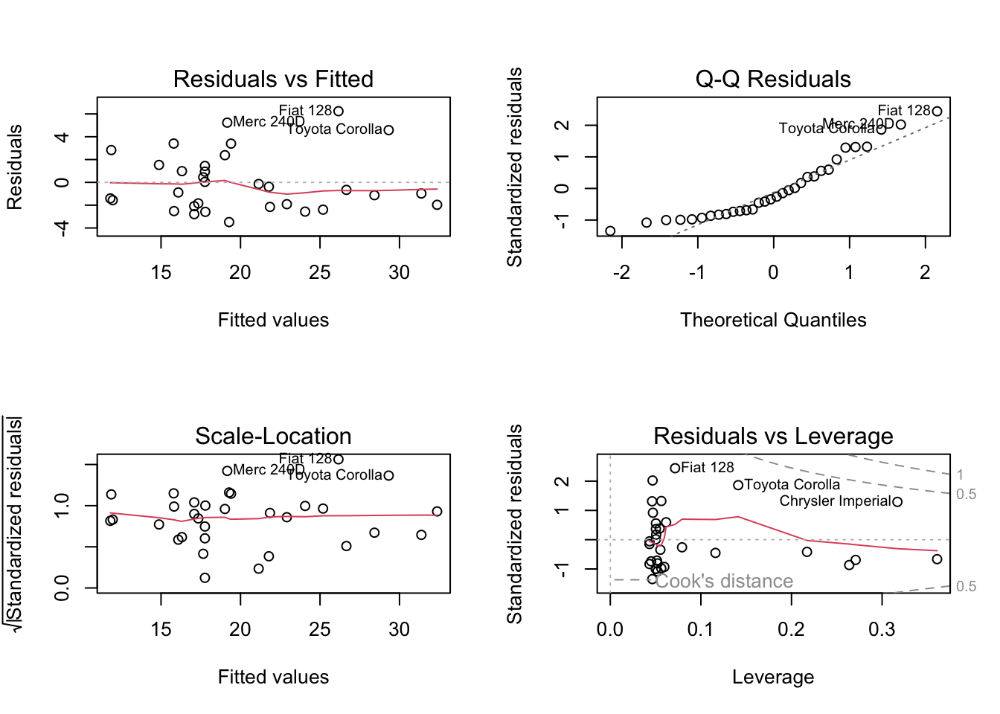
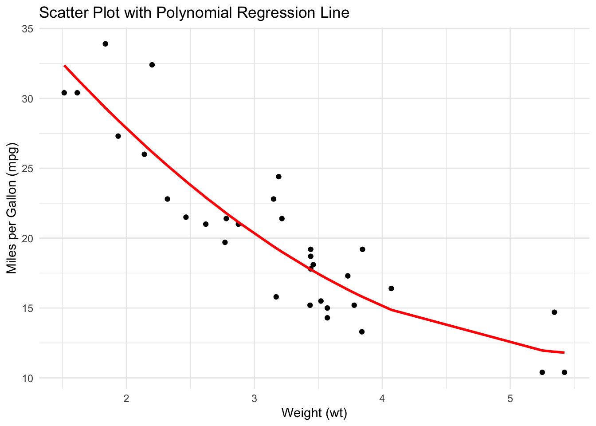

20 Introduction to Polynomial Regression
Understanding and Coding in R
20.1 What is a Polynomial Regression?
Polynomial regression is a type of regression analysis that models the non-linear relationship between the predictor variable(s) and response variable1. It is an extension of simple linear regression that allows for more complex relationships between predictor and response variables1.
In simple terms, it allows us to fit a curve to our data instead of a straight line.
20.1.1 When is a Polynomial Regression Used?
Polynomial regression is useful when the relationship between the independent and dependent variables is nonlinear.
It can capture more complex relationships than linear regression, making it suitable for cases where the data exhibits curvature.
20.1.2 Assumptions of Polynomial Regression
- Linearity: There is a curvilinear relationship between the independent variable(s) and the dependent variable.
- Independence: The predictor variables are independent of each other.
- Homoscedasticity: The variance of the errors should be constant across all levels of the independent variable(s).
- Normality: The errors should be normally distributed with mean zero and a constant variance.
20.1.3 Mathematical Equation
Consider independent samples \(i = 1, \ldots, n\). The general formula for a polynomial regression representing the relationship between the response variable (\(y\)) and the predictor variable (\(x\)) as a polynomial function of degree \(d\) is:
\[ y_i = \beta_0 + \beta_1x_i + \beta_2x_i^2 + \beta_3x_i^3 + ... \beta_dx_i^d + \epsilon_i, \]
where:
- \(y_i\) represents the response variable,
- \(x_i\) represents the predictor variable,
- \(\beta_0,\ \beta_1,\ \ldots,\ \beta_d\) are the coefficients to be estimated, and
- \(\epsilon_i\) represents the errors.
For large degree \(d\), polynomial regression allows us to produce an extremely non-linear curve. Therefore, it is not common to use \(d > 3\) because the larger value of \(d\), the more overly flexible polynomial curve becomes, which can lead to overfitting them model to the data.
The coefficients in polynomial function can be estimated using least square linear regression because it can be viewed as a standard linear model with predictors \(x_i, \,x_i^2, \,x_i^3, ..., x_i^d\). Hence, polynomial regression is also known as polynomial linear regression.
20.1.4 Performing a Polynomial Regression in R
- Step 0: Load required packages
- Step 1: Load and inspect the data
- Step 2: Visualize the data
- Step 3: Fit the model
- Step 4: Assess Assumptions
- Step 5: Describe model output
20.2 Let’s Practice!
Now let’s go through the steps to perform a polynomial regression in R. We’ll be using the lm() function to fit the polynomial regression model. This function comes standard in base R.
20.2.1 Hypotheses
For this example, we are investigating the following:
-
Research Question: Is there a significant quadratic relationship between the weight of a car (
wt) and its miles per gallon (mpg) in themtcarsdataset? -
Null hypothesis (\(H_0\)): There is no significant relationship between the weight of a car (
wt) and its miles per gallon (mpg). -
Alternative hypothesis (\(H_A\)): There is a significant relationship between the weight of a car (
wt) and its miles per gallon (mpg).
In this case, the null hypothesis assumes that the coefficients of the quadratic polynomial terms are zero, indicating no relationship between the weight of the car and miles per gallon. The alternative hypothesis, on the other hand, suggests that at least one of the quadratic polynomial terms is non-zero, indicating a significant relationship between the weight of the car and miles per gallon.
By performing the polynomial regression analysis and examining the model summary and coefficients, we can evaluate the statistical significance of the relationship and determine whether to reject or fail to reject the null hypothesis.
20.2.2 Step 0: Install and load required package
In R, we’ll use the lm() function from the base package to perform polynomial regression. Also, since we want to visualize our data, we will be loading the ggplot2 package for use.
20.2.3 Step 1: Load and inspect the data
For this example, we will use the built-in mtcars dataset (from the standard R package datasets) which is publicly available and contains information about various car models.
# Load mtcars dataset
data(mtcars)# Print the first few rows
head(mtcars) mpg cyl disp hp drat wt qsec vs am gear carb
Mazda RX4 21.0 6 160 110 3.90 2.620 16.46 0 1 4 4
Mazda RX4 Wag 21.0 6 160 110 3.90 2.875 17.02 0 1 4 4
Datsun 710 22.8 4 108 93 3.85 2.320 18.61 1 1 4 1
Hornet 4 Drive 21.4 6 258 110 3.08 3.215 19.44 1 0 3 1
Hornet Sportabout 18.7 8 360 175 3.15 3.440 17.02 0 0 3 2
Valiant 18.1 6 225 105 2.76 3.460 20.22 1 0 3 120.2.4 Step 2: Visualize the data
Before fitting a polynomial regression model, it’s helpful to visualize the data to identify any non-linear patterns. For our example, we will use a scatter plot to visualize the relationship between the independent and dependent variables:
# Scatter plot of mpg (dependent variable) vs. wt (independent variable)
ggplot(mtcars) +
theme_minimal() +
aes(x = wt, y = mpg) +
labs(x = "Weight (lbs/1000)", y = "Miles per Gallon") +
geom_point()
20.2.5 Step 3: Fit Models
Let’s create a function so we can build multiple models. We will build a standard linear model and a quadratic model (degrees 1 and 2, respectively).
# Function to fit and evaluate polynomial regression models
fit_poly_regression <- function(degree) {
formula <- as.formula(paste("mpg ~ poly(wt, ", degree, ")"))
lm(formula, data = mtcars)
}
# Fit polynomial regression models with degrees 1 to 2
model_1 <- fit_poly_regression(1)
model_2 <- fit_poly_regression(2)To fit a polynomial regression model, we’ll use the lm() function and create polynomial terms using the poly() function. In this example, we’ll fit a standard linear (degree = 1) and a quadratic polynomial (degree = 2) to the mtcars dataset.
20.2.6 Step 4: Assess Assumptions
Before we can interpret the model, we have to check the assumptions. We will check these assumptions via plots:
- Residuals vs. Fitted values (used to check the linearity assumption),
- a Q-Q plot of the Residuals (used to check the normality of the residuals),
- a Scale-Location plot (used to check for heteroskedasticity), and
- Residuals vs. Leverage values (identifies overly influential values, if any exist).


We see that Model 2 (the quadratic one) satisfies the “linearity” assumption, because the red line in the “Residuals vs Fitted” graph is flat. However, the Q-Q plot shows that the residuals are not normally distributed, so we should take additional steps to transform the response feature (such as via a square root or log transformation, or something similar).
20.2.7 Step 5. Describe Model Output
Although we recognize that this model is not correct (because the residuals are not approximately normal), we will give an example of how to interpret this output.
summary(model_2)
Call:
lm(formula = formula, data = mtcars)
Residuals:
Min 1Q Median 3Q Max
-3.483 -1.998 -0.773 1.462 6.238
Coefficients:
Estimate Std. Error t value Pr(>|t|)
(Intercept) 20.0906 0.4686 42.877 < 2e-16 ***
poly(wt, 2)1 -29.1157 2.6506 -10.985 7.52e-12 ***
poly(wt, 2)2 8.6358 2.6506 3.258 0.00286 **
---
Signif. codes: 0 '***' 0.001 '**' 0.01 '*' 0.05 '.' 0.1 ' ' 1
Residual standard error: 2.651 on 29 degrees of freedom
Multiple R-squared: 0.8191, Adjusted R-squared: 0.8066
F-statistic: 65.64 on 2 and 29 DF, p-value: 1.715e-1120.2.8 Bonus Step: Visualize the Final Model
Finally, let’s plot the scatter plot with the polynomial regression line to visualize the fit:
# Create a data frame with data points and predictions
plot_data <- data.frame(
wt = mtcars$wt,
mpg = mtcars$mpg,
mpg_predicted = predict(model_2, newdata = mtcars)
)
# Scatter plot with the polynomial regression line
ggplot(plot_data) +
theme_minimal() +
aes(x = wt, y = mpg) +
labs(
title = "Scatter Plot with Polynomial Regression Line",
x = "Weight (wt)",
y = "Miles per Gallon (mpg)"
) +
geom_point() +
geom_line(aes(y = mpg_predicted), color = "red", size = 1)Warning: Using `size` aesthetic for lines was deprecated in ggplot2 3.4.0.
ℹ Please use `linewidth` instead.
20.3 Further Discussion
- Piecewise polynomials: Instead of fitting a high-degree polynomial over the entire range of X, piece- wise polynomial regression involves fitting separate low-degree polynomials over different regions of X. The coefficients βi differ in different parts of the range of X. The points where the coefficients change are called knots. Using more knots leads to a more flexible piecewise polynomial2.
- Constraints and spline: the technique of reduce the number of degree of freedom on piecewise polynomial to produce a continuous and naturally smooth fit model on data2.
20.4 References
Field, A. (2013). Discovering Statistics Using IBM SPSS Statistics. (4th ed.). Sage Publications.
James, G., Witten, D., Hastie, T., & Tibshirani, R. (2013). An Introduction to Statistical Learning with Applications in R. (2nd ed.). Publisher. (pp. 290-300)